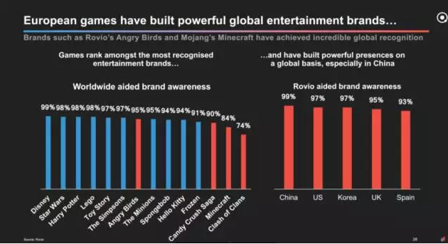

《王者荣耀》卖皮肤日流水1.5亿 中国玩家正把全球游戏产业带入转折点【星河研究院】
2017-06-13来源：星河研究院
- 游戏产业已经成了世界上最大、发展最快的行业之一。就拿现在中国的国民游戏“王者荣耀”来说，玩家既有娱乐圈明星也有出租车司机，甚至还出现了一家人三世同堂一起开黑打游戏的场景。它贡献的数据更为恐怖：2亿下载量、30 亿月流水、 DAU （日活跃用户数量）超 8000 万、皮肤日流水 1.5 亿、所有玩家 14% 的时间占用比.......
- 智能手机的普及让不同年龄、性别、民族、收入的人群都成为了游戏玩家，可以说，游戏的市场几乎是无限的，它也是全球投资者一直都很感兴趣的行业。现在这个行业的创业者已经不再满足千万甚至1亿的用户玩家，10亿用户也已经不再遥不可及，游戏行业已经到了最重要的转折点。
- 今天星河研究院将通过伦敦风投公司Atomico的投资总监兼研究负责人Tom Wehmeier的一篇研究报告“EuropeMeets China（欧洲遇见中国）”来分析一下游戏产业的变迁以及发展趋势。

- 在过去的一年里，游戏市场达成了三个重要的里程碑：
- 第一，游戏市场规模突破了1000亿美元。作为单独的一个行业，其价值已经是全球电影产业的三倍； 第二，移动端成为主导，市场规模增长到390亿美元，正式成为游戏产业中最大的细分领域； 第三，去年全球游戏玩家第一次超过了20亿人，这是一个惊人的数字。
- 游戏产业已经成为制造十亿美元公司的工厂。在过去的15年中，至少有24家公司实现了10亿美元的估值，这其中有11家来自中国，6家来自欧洲。
- 这个产业跨越了半个世纪，创造了非常有价值的公司。上市公司中有至少72家市值在1亿美元以上，市值总额超过5000亿美元，这还没有计算那些非常成功的非上市公司，例如MZ和Rovio。
- 这些显著的增长并没有被投资者忽视。在公开市场上，投资者对游戏产业的信心增加。虽然相比于其他科技产业（例如SaaS或marketplace）P/S或P/E倍数仍打折扣，但相比于2012年则翻了一番。在私募市场上，我们看到投资者对下一代工作室的热捧持续，特别是在欧洲。在2016年，欧洲游戏公司创造了投资的历史新高，而这一趋势将在今年持续。
- 投资者被吸引到游戏产业不是没有原因的，最主要的原因就是退出的时间比较快。与其他科技行业相比，达到10亿美元估值而退出的游戏公司是其他科技行业的2倍。
- 在IPO市场上，环境非常健康。今年5月，Netmarble以130亿美元的估值上市，融了23亿美元，这也是韩国历史上金额最高的IPO事件。在欧洲，中等规模的游戏公司，例如Next Games和Paradox也已经达到了足够的成长和利润，也已经成功上市。
- 我们也看到了前所未有的合并。过去5年前20大并购交易的总额达到了500亿美元。欧洲领先的游戏公司是这一趋势的巨大受益者，其中就包括Supercell和King& Outfit7的例子。根据计算，来自欧洲的并购标的公司占总退出额的70%以上。
- 欧洲只是故事的一面。虽然它已经成为手游的中心，在不断制造伟大的游戏公司，但同样的事情也在中国发生。虽然在中国手游的起步晚了些，但这几年的飞速发展已经赶上了其他国家的脚步。而且中国已经拥有全世界最多的游戏玩家，已达6亿人，他们在游戏上的花费已经超过美国和整个欧洲。
- 中国巩固世界第一的位置具有重要的意义，这意味着成为“世界第一”的标准改变了。你当然可以创造一个伟大的游戏公司，但如果你想成为世界第一的游戏工作室，你不能忽视中国市场。下一个十年，中国是所有游戏公司都需要积累经验的地方。
- 我们再回头看一下过去5年的前20大并购交易，这次不看并购标的，看买家。没有一个并购事件的买家来自欧洲，但中国买家投入了总并购金额的一半。现在中国的实力不容忽视，已经成为游戏产业最有价值公司的大本营。中国游戏上市公司的总市值已经达到3380亿美元，占全球游戏上市公司总市值的72%。
- 游戏产业的快速扩张也为游戏开发者创造了前所未有的竞争环境。仅仅iOS和Google Play商店每天就要发布1500个新游戏，这意味着每年有超过55万个新游戏在彼此竞争，这个数字是2012年的4倍。一个游戏带来的利润是巨大的，只有保持榜首的位置才能保证利润。这也是为什么我们看到顶级公司每年花费数亿美元来保持自己的领先地位，这对于任何新晋者都是难以置信的挑战。
- 这个竞争在中国就更为激烈，尤其是对于外国的游戏公司，中国无疑是最具挑战性的市场。在iOS平台上的游戏中有93%都是中国的开发者开发的游戏，这比其他国家更本地化，包括日本和韩国。
- 虽然亚洲的国家由于文化的原因更喜欢本地化的游戏，但我们认为亚洲对国际化内容的需求也是很强劲的，这从其他内容行业，例如票房第一的电影或畅销的音乐艺术家，就可以看出。著名的海外IP在中国也很有可能取得成功。
- 要抓住中国的市场，当然需要与中国企业的合作。正确的合作不仅可以让欧洲游戏在中国取得成功，也有助于中国企业在国际上取得更大的成功。而这已经在发生了，欧洲的游戏开发者每年在中国已获得1亿美元以上的收入。再看一下在欧洲2016年销量最高、下载量最多的游戏，我们可以发现中国的企业已经对其非常感兴趣了。
- 
- 当然，还有很多可以合作的方向。机会仍是巨大的，我们相信通过欧洲与中国游戏公司间的合作，会创造出下一个里程碑——10亿用户的超级游戏。